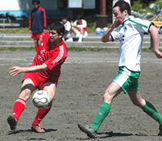

OLD STORIES - April 2007
Swiss Run Riot Over Celts.
|  |
OiFuto 1, Sunday 29th April, The pitch was waterlogged but the weather was beautiful enough to offset the mud at Oifuto on Sunday. A nearly full strength Swiss team had gathered to do battle with the Celts who appeared to be missing a few key players. It is an unusual luxury for a Swiss team that has struggled for consistency in lineups and form this year. more ...
KN.
Abysmal!
OiFuto 1, Sunday 29th April, Celts tamely rolled over to an average Swiss side with a talented Englishman and someone who claims to be Irish up front, several Japanese in midfield and defence, and perhaps a Swiss or two somewhere on the pitch. Whoever they have playing its doubtful they will have it so easy again. more ...
RH.
The Sound of Distant Clucking
Hachioji Park, Saturday 28th April, A fabulous goal from Pink Neil gave BFC a 1-0 win over Jetro to leave them needing one point from their final two games to secure a first TML title.
Comments from TML rivals talking of 'gifting' BFC the championship were rendered well and truly absurd as, once again, BFC were forced to grind out a tough win Bung Meister George Graham would have been proud of. more ...
AH.
Lions Finally Roaring.
Misato, Sunday 22nd April, On a windy but beautiful day at Misato, Lions were playing their last game in their first TML campaign that was plagued by below par performances due to lack of keeper.
The opponents this time were WS Clash who were 3 points ahead and 8 goals better than Lions. more ...
HS.
JETS s Storm Back to Claim Point From Hibs.
Hachioji Park, Saturday 21st April, Saitama Jets produced a stirring second half comeback to grab a point from last season’s champions, Hibs, at Hachioji Park on a hot Saturday afternoon. Hibs led 2 – 0 at half time thanks to two quality strikes, but perpetual substitute Shimizu laid claim to a starting place in the Jets’ attack with two superb finishes late in the second half to continue the Jets’ recent good run of form. more ...
RK.
Hibs & Swiss Bobble Out Draw
Misato, Sunday 15th April, The Hibs and the Swiss are out of the running for the 2007 league title, but still managed to dig deep and find things to play for on a Sunday morning at Misato. more ...
JA.
Taxi for the Geckoes
Misato, Sunday 15th April, The Geckoes entertained Jetro on Sunday on the Misato beach and were looking forward to getting back on winning ways. Despite having played well (in parts) in most of their previous 4 games, the Geckoes had failed to pick up a point and were hoping for a convincing win against the bottom of the table side. more ...
RK.
Life Deals Scotsman Bum Hand: Scotsman Miffed.
Misato, Sunday 15th April, Life has an annoying way of crushing ones spirit underfoot, like Godzilla leaping off a tall building onto a paper bowl of trifle.
Although Sala somehow clung on to take a barely deserved three points from France, I couldn’t help thinking of the old adage: When is a win not a win?
The answer being; when you are making a return after a lengthy injury, decide to gamble on a tentative ten minute spell before half time to test the water, and end up scoring an own-goal and pulling your hamstring quite nastily, so that you are lying in disgrace and intense pain (Not to mention, intriguingly, in a state of semi-arousal) before the halftime whistle even blows. See opening sentence. more ...
RC.
Celts Climb Out of Relegation Places
Misato, Sunday 15th April, Another must win game was finally won by the Celts. After the last few disappointing results there was a lot of relief among the Celts with the final whistle. more ...
GD.
Celtic Warriors Crush YCAC
Misato, Sunday 15th April, The uninformed observer would not have been surprised to learn that 1 team was 2nd from top and the other 2nd from bottom with a whopping 25 points seperating them at KO. They just would have got it the wrong way around. more ...
ST.
Swiss Hold Moti Boys, Helping BFC's Cause.
Misato, Sunday 15th April, In a dour battle with few quality chances between them, the Hibs and Swiss fought to a draw at Misato. The result likely ended both teams' chances of edging out the BFC for the league title . Both teams were missing players for this game but the Swiss haven't done much in terms of recruiting and looked to be worse off at the start. The Hibs come at you with a large back line, that never seems to move forward, and leaves the entire game to its creative midfielders. more ...
KN.
New Boys Lift Hibs Over Sala.
Misato, Sunday 8th April, A very even game between two mid-table sides saw Hibs scrape a 1-0 victory. The football was not helped by the beach in the centre of the field.
It was an end-to-end game with very few chances, with both keepers making several excellent saves and both teams defending well. more ...
KT.
JETS s Climb to Safety Zone.
 |
Hachioji Park, Sunday 8th April, Saitama Jets extended their excellent record against Kanto Celts with goals from John Rayner and Nate Gildart to all but secure their place in TML1 for next season.
The Jets lined up against the Celts knowing that victory would surely be enough to make their final two games of the season academic. The Jets have grown into TML1 as the season has progressed and recently have learnt how to win games that would have been lost at the start of the season. more ...
RK.
Hibs Rekindle Fire.
YC&AC, Sunday 1st April, The Hibs finally found their confidence with a convincing 5-0 win over the Wall Street Geckoes. We knew we were in for a tough match with the Geckoes who were in a relegation scrap and looking for revenge after the 10-0 drubbing by the Hibs in round one. The Hibs were hit once again by injury with Mick O’Hagan ruled out with a hamstring injury sustained while playing in a corporate game on the Saturday. more ...
BC.
Vagabonds Draw Curtain on Clash.
Hachioji Park, Sunday 1st April, Paul Wadsworth wont be playing but Steve G will was like the Irish Limerick “ there is only one bar but it's a mile long”. You could write a novella about this game if you were that way inclined. The stakes were high and are worth reiterating: lose, no promotion. Win, chance of promotion. Add significance according to your constitution. more ...
GQ.
Hibs Rekindle Fire.
YC&AC, Sunday 1st April, The Hibs finally found their confidence with a convincing 5-0 win over the Wall Street Geckoes. We knew we were in for a tough match with the Geckoes who were in a relegation scrap and looking for revenge after the 10-0 drubbing by the Hibs in round one. The Hibs were hit once again by injury with Mick O’Hagan ruled out with a hamstring injury sustained while playing in a corporate game on the Saturday. more ...
BC.
Celts Snatch Defeat from the Jaws of Victory.
YC&AC, Sunday 1st April, Having fought so hard to gain a valuable point agains the Hibs a week earlier, Celts headed to a meeting with Jetro with confidence that we could break out of the bottom 2 with a victory. The game started well with a series of attacks repelled by last ditch Jetro defending and at least one good save from the keeper. more ...
RH.